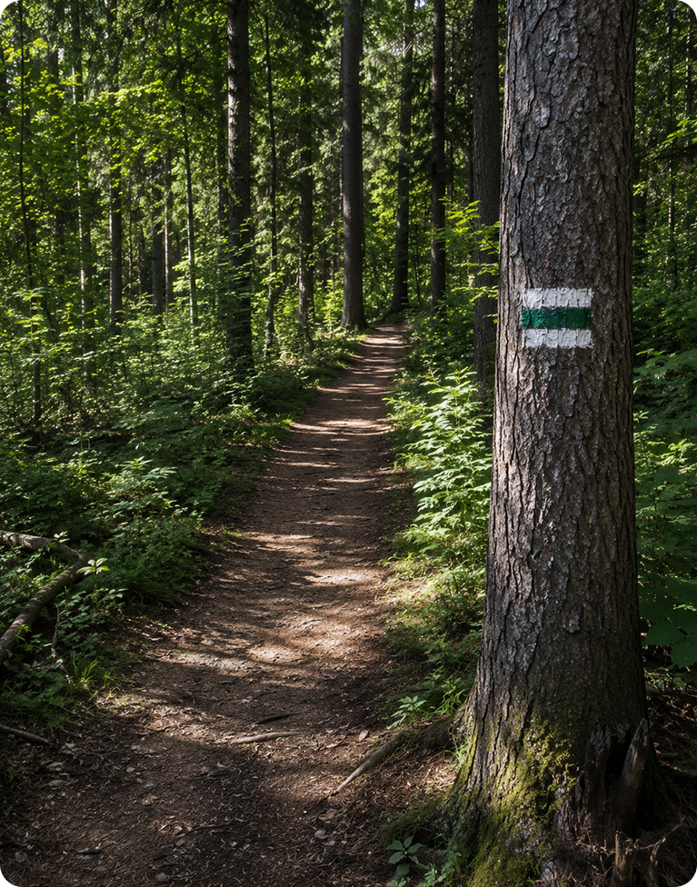
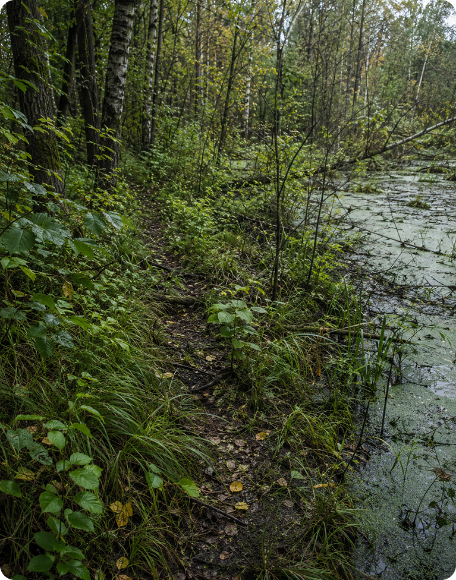
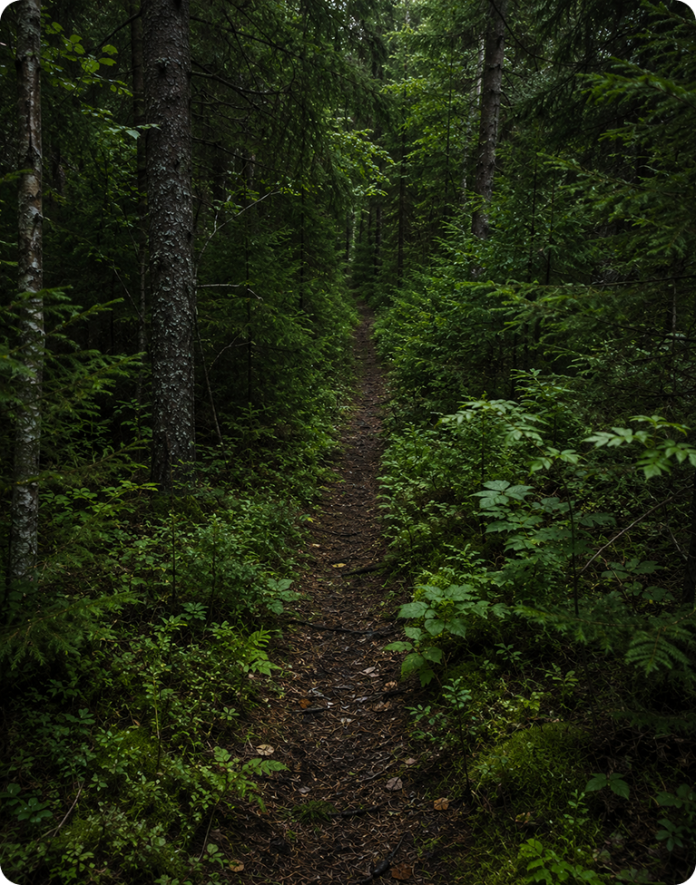

о нас
статьи
интерактивы
маршруты
календарь
Какой маршрут безопаснее?
Выбери тропу, по которой безопаснее продолжить путь

i
Читаемая тропа с маркировкой на деревьях

i
Читаемая тропа с маркировкой на деревьях

i
Читаемая тропа с маркировкой на деревьях
1
2
3
4
5